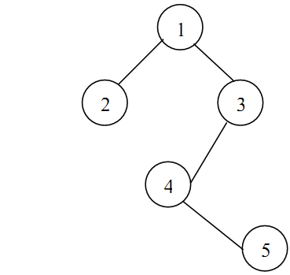

# Binary Tree
Binary trees are structures with a tree formation (nodes 'branch' off to children), in which every node can have **at most** 2 children - so, nodes can have 0, 1, or 2 children. If a node has 1 child, the unused pointer will point to the null value, and if a node has 0 children, it is a 'leaf node' and has no pointers.

In the binary tree above, nodes 5, 6, 7, 8, and 9 are leaf nodes, with no children. All the rest of the nodes [1..4] have pointers to 2 children. If we were to remove node 6, then 3 would only have a non-null right child, as the left child (previously node 6) would point to null.
A Strict or Proper Binary tree is a binary tree where each node can only have 2 children, or 0 children. The tree above would be strict, until we remove node 6, giving node 3 only 1 child.
A complete binary tree is a tree in which all levels except, in some situations, the last level, are filled and all nodes are as far-left as possible. The tree in the image *is* complete, as it is strict and all nodes and corresponding children are as far left as possible. The tree below is not complete, because node 5 is node 4's right child, and to be complete it must be node 4's left child.

More about depth levels. In the first diagram, node 1 is at level 0 (remember a lot of counting in computer science starts with 0), node 2 and 3 are at level 1, nodes 4, 5, 6 and 7 are at level 2, and nodes 8 and 9 are level 3. For a binary tree, on level 'x', the maximum number of nodes on that level is 2x. This still works when the level is 0, because numbers raised to 0 are always 1.
In a perfect binary tree (a tree in which each node, except for the bottom ones, has two children), with maximum level 'm', the maximum number of nodes in the whole tree is 2m+1-1. An explanation of that formula is this: In a full tree, you have a number of nodes on each level that doubles with every level - 1 root at level 0, 2 children at level 1, 4 grandchildren at level 2, 8 great-grandchildren at level 3, etc... This demonstrates the 2x formula that was stated before (e.g. level 3 - 23 = 8 great-grandchildren).